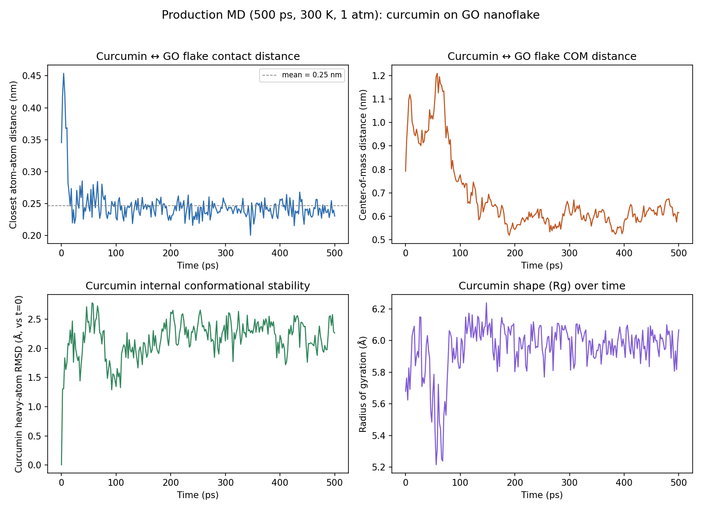

Does a favorable DFT binding energy actually survive real thermal motion in water? A 500 ps unrestrained molecular dynamics run says: yes, so far.

| Stage | Length | Temperature | Density / pressure | Result |
|---|---|---|---|---|
| Energy minimization | — | — | — | Converged in 72 steps |
| NVT equilibration | 50 ps | 299.7 ± 2.8 K | — | Zero LINCS failures |
| NPT equilibration | 50 ps | 299.5 K | ~1018 kg/m³, flat | No drift |
| Production MD | 500 ps | 300.1 K | ~1019 kg/m³, ~4 bar | Stable throughout |